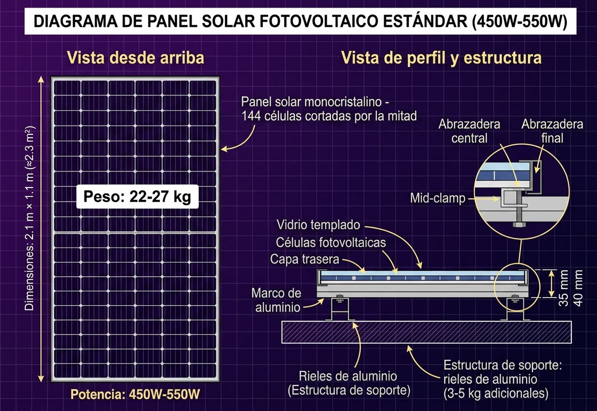

Análisis de carga: El sol como material de obra
Calculá el impacto del sistema fotovoltaico sobre la estructura de perfiles PGC/PGU.
📐 ¿Cómo se calcula la carga?

La estructura de rieles y herrajes agrega 3-5 kg adicionales por panel.
Para un técnico constructor, cada panel solar es un peso muerto adicional que la cubierta debe soportar. El cálculo es simple pero fundamental para evitar colapsos estructurales.
Fórmula principal:
Peso total = cantidad de paneles × (peso del panel + peso de la estructura)
Peso del panel (450W-550W): 22 a 27 kg según fabricante.
Peso de la estructura (rieles, herrajes): 3 a 5 kg por panel.
→ Rango típico por panel: 25 a 32 kg.
→ Valor de referencia para cálculos preliminares: 28 kg/panel (promedio).
Distribución de carga (kg/m²):
kg/m² = Peso total / (cantidad de paneles × superficie de cada panel)
Ejemplo: 6 paneles × 2.1 m² = 12.6 m² de ocupación.
Si pesan 150 kg total → 150 / 12.6 = 11.9 kg/m²
📌 Caso práctico resuelto (obra real):
Problema: Un techista instala 12 paneles en una cubierta de chapa. Cada panel pesa 24 kg. La estructura de soporte agrega 45 kg adicionales. La superficie útil del techo es de 35 m².
Paso 1 - Carga muerta total:
(12 paneles × 24 kg) + 45 kg = 288 + 45 = 333 kg
Paso 2 - kg/m² adicionales:
333 kg / 35 m² = 9.5 kg/m²
Paso 3 - Conclusión: La cubierta original se diseñó para 30 kg/m² (carga de nieve/mantenimiento). 9.5 kg/m² adicionales es aceptable, pero debe verificarse la flecha de los perfiles PGC.
⚠️ Precauciones importantes:
- Verificar la flecha admisible de los perfiles PGC (L/250 o L/200 según uso).
- Los paneles coplanares sufren succión por viento. Revisar CIRSOC 102.
- Nunca pisar los paneles durante la limpieza: el peso humano rompe las celdas de silicio.
- Usar herramientas aisladas porque los cables DC siempre tienen tensión durante el día.
🧮 Calculadora interactiva
Modificá los valores y ejecutá el análisis para ver cómo cambia la carga sobre la estructura.
Rango real: 25-32 kg (panel 22-27 + estructura 3-5). Usamos 28 kg como promedio.
Referencias: CIRSOC 102 (Reglamento Argentino de Acción del Viento) | PGC (Perfil Galvanizado de Chapa)
Pesos típicos según fabricantes: JA Solar, Trina Solar, LONGi (2024-2025)